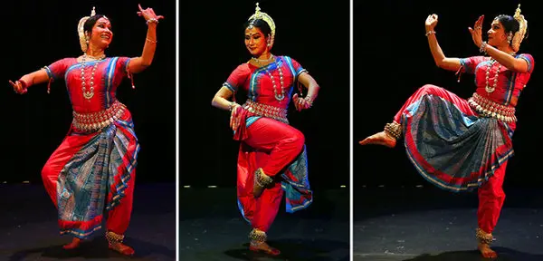
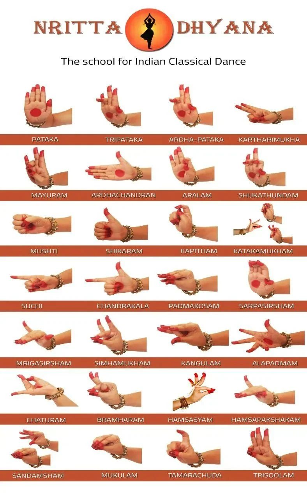

As you can see, Odissi dance has preserved spiritual traditions throughout its evolution whether its when the Maharis performed in the temples as an offering to Lord Jagannatha, when the gotipuas performed Bandha Nrutya influenced by the devotional movement of sakhibhava, or even today when dancers perform several pieces depicting spiritual feelings, stories, and pastimes of the worshipped gods. However, Odissi dance has also upheld Indian heritage as it helped keep a significant piece of India’s rich cultural traditions intact and thriving to this day. Odissi does this in many ways. One way is how many dances in Odissi are abhinayas where significant spiritual, devotional, or historical events are shown through the dance -almost like a play. Odissi dance beautifully illustrates and upholds the culture, spirituality, and history of India. Odissi’s most captivating features are its abhinayas. This is due to the intricate nature of abhinayas because of the many, many expressions the dancers must show and embody.
Odissi dance itself is unparalleled amongst all dances because of the elaborate footwork, hand mudras, expressions, torso, and upper body movement, ultimately making Odissi dance a composition of several moving parts in even just one beat. Moreover, Odissi has several different types of beats, music, and raagas that correspond to different dance types. For example, a pallavi is danced to music consisting mainly of beats. An abhinaya is danced to music consisting mainly of lyrics depicting what the dancer is showing. In this way Odissi gives diversity in not just the dance but also in the music of the dance.
